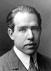

¿Que es el modelo atomico de Bohr?
La estructura electrónica de un átomo describe las energías y la disposición de los electrones alrededor del átomo. Gran parte de lo que se conoce acerca de la estructura electrónica de los átomos se averiguó observando la interacción de la radiación electromagnética con la materia.
Sabemos que el espectro de un elemento químico es característico de éste y que del análisis espectroscópico de una muestra puede deducirse su composición.
El origen de los espectros era desconocido hasta que la teoría atómica asoció la emisión de radiación por parte de los átomos con el comportamiento de los electrones, en concreto con la distancia a la que éstos se encuentran del núcleo.
El físico danés Niels Bohr ( Premio Nobel de Física 1922), propuso un nuevo modelo atómico que se basa en tres postulados:
Primer Postulado: Los electrones giran alrededor del núcleo en órbitas estacionarias sin emitir energía
Segundo Postulado: Los electrones solo pueden girar alrededor del núcleo en aquellas órbitas para las cuales el momento angular del electrón es un múltiplo entero de h/2p.
siendo "h" la constante de Planck, m la masa del electrón, v su velocidad, r el radio de la órbita y n un número entero (n=1, 2, 3, ...) llamado número cuántico principal, que vale 1 para la primera órbita, 2 para la segunda, etc.
Tercer postulado: Cuando un electrón pasa de una órbita externa a una más interna, la diferencia de energía entre ambas órbitas se emite en forma de radiación electromagnética. Mientras el electrón se mueve en cualquiera de esas órbitas no radia energía, sólo lo hace cuando cambia de órbita. Si pasa de una órbita externa (de mayor energía) a otra más interna (de menor energía) emite energía, y la absorbe cuando pasa de una órbita interna a otra más externa. Por tanto, la energía absorbida o emitida será:
En resumen podemos decir que los electrones se disponen en diversas órbitas circulares que determinan diferentes niveles de energía.
Cada órbita se corresponde con un nivel energético que recibe el nombre de número cuántico principal, se representa con la letra " n " y toma valores desde 1 hasta 7 . La teoría de Bohr predice los radios de las órbitas permitidas en un átomo de hidrógeno.
La teoría también nos permite calcular las velocidades del electrón en estas órbitas, y la energía. Por convenio, cuando el electrón está separado del núcleo se dice que está en el cero de energía. Cuando un electrón libre es atraído por el núcleo y confinado en una órbita n, la energía del electrón se hace negativa, y su valor desciende a RH es una constante que depende de la masa y la carga del electrón y cuyo valor es 2.179 · 10-18 J.
Normalmente el electrón en un átomo de hidrógeno se encuentra en la órbita más próxima al núcleo (n=1). Esta es la energía permitida más baja, o el estado fundamental. Cuando el electrón adquiere un cuanto de energía pasa a un nivel más alto (n=2,3, ...) se dice entonces que el átomo se encuentra en un estado excitado. En este estado excitado el átomo no es estable y cuando el electrón regresa a un estado más bajo de energía emite una cantidad determinada de energía, que es la diferencia de energía entre los dos niveles.La energía de un fotón, bien sea absorbido o emitido, se calcula de acuerdo con la ecuación de Planck.El electrón puede acceder a un nivel de energía superior pero para ello necesita "absorber" energía. Cuando vuelve a su nivel de energía original, el electrón necesita emitir la energía absorbida (por ejemplo en forma de radiación).